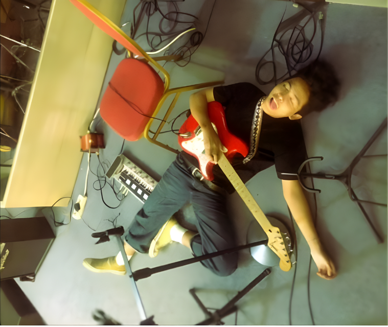

I’m an Informatics Engineer with a strong focus on frontend development...
I’m an Informatics Engineer with a strong focus on frontend development and building solid, well-structured web applications. I enjoy turning ideas into real, working systems that are clean, scalable, and actually make sense under the hood.
I’m an Informatics Engineer with a strong focus on frontend development and building solid, well-structured web applications. I enjoy turning ideas into real, working systems that are clean, scalable, and actually make sense under the hood.I’m an Informatics Engineer with a strong focus on frontend development and building solid, well-structured web applications. I enjoy turning ideas into real, working systems that are clean, scalable, and actually make sense under the hood.I’m an Informatics Engineer with a strong focus on frontend development and building solid, well-structured web applications. I enjoy turning ideas into real, working systems that are clean, scalable, and actually make sense under the hood.I’m an Informatics Engineer with a strong focus on frontend development and building solid, well-structured web applications. I enjoy turning ideas into real, working systems that are clean, scalable, and actually make sense under the hood.

IKJ on Thursday w/ Wednesday
I’m an Informatics Engineer with a strong focus on frontend development and building solid, well-structured web applications. I enjoy turning ideas into real, working systems that are clean, scalable, and actually make sense under the hood.I’m an Informatics Engineer with a strong focus on frontend development and building solid, well-structured web applications. I enjoy turning ideas into real, working systems that are clean, scalable, and actually make sense under the hood.I’m an Informatics Engineer with a strong focus on frontend development and building solid, well-structured web applications. I enjoy turning ideas into real, working systems that are clean, scalable, and actually make sense under the hood.I’m an Informatics Engineer with a strong focus on frontend development and building solid, well-structured web applications. I enjoy turning ideas into real, working systems that are clean, scalable, and actually make sense under the hood.I’m an Informatics Engineer with a strong focus on frontend development and building solid, well-structured web applications. I enjoy turning ideas into real, working systems that are clean, scalable, and actually make sense under the hood.I’m an Informatics Engineer with a strong focus on frontend development and building solid, well-structured web applications. I enjoy turning ideas into real, working systems that are clean, scalable, and actually make sense under the hood.I’m an Informatics Engineer with a strong focus on frontend development and building solid, well-structured web applications. I enjoy turning ideas into real, working systems that are clean, scalable, and actually make sense under the hood.
I’m an Informatics Engineer with a strong focus on frontend development and building solid, well-structured web applications. I enjoy turning ideas into real, working systems that are clean, scalable, and actually make sense under the hood.
